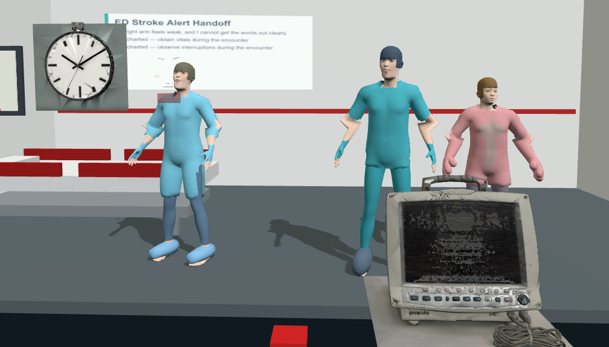
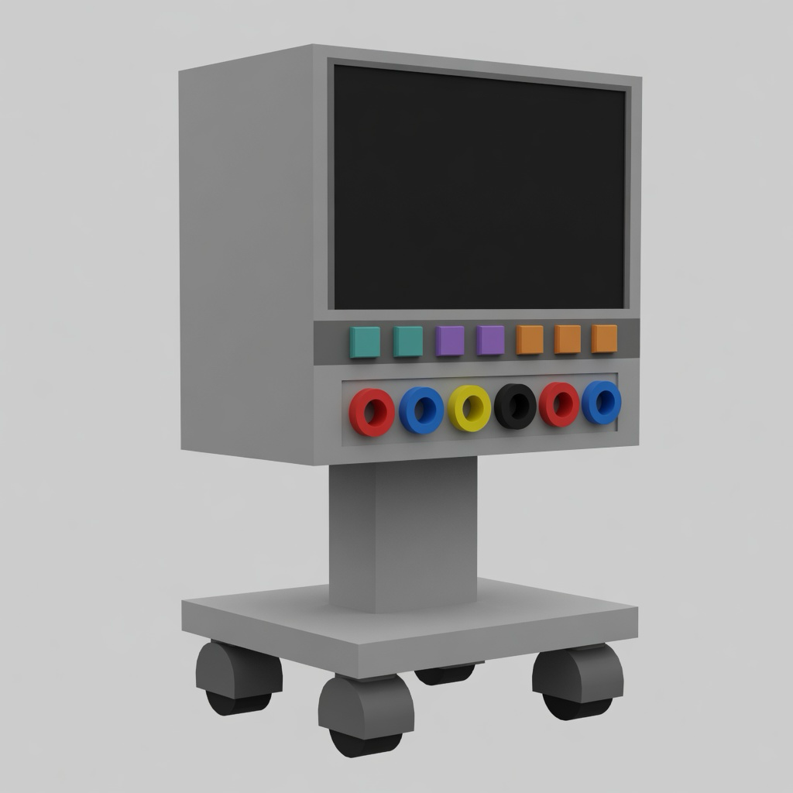
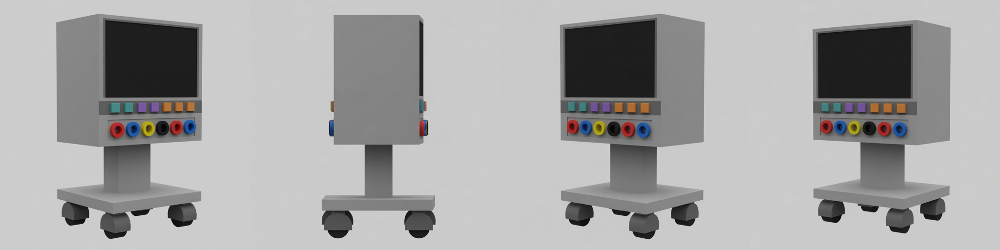
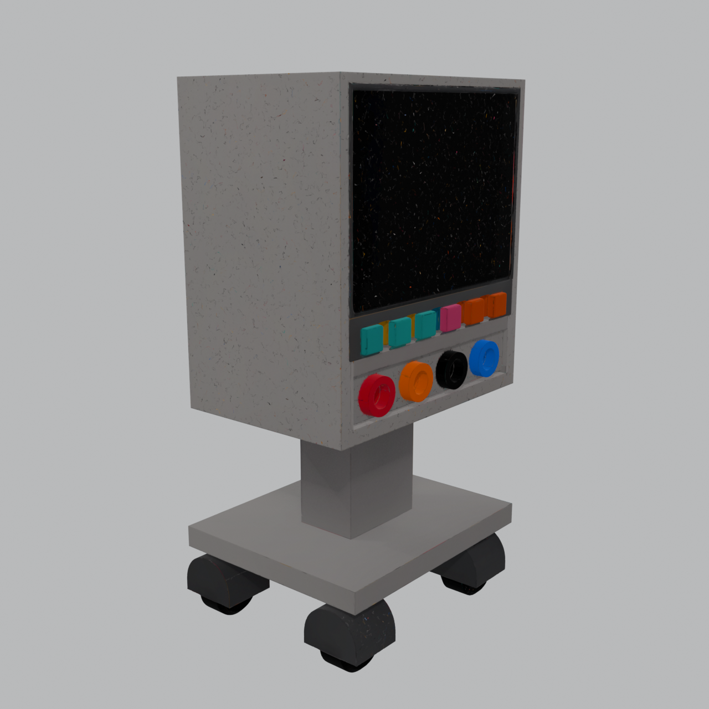
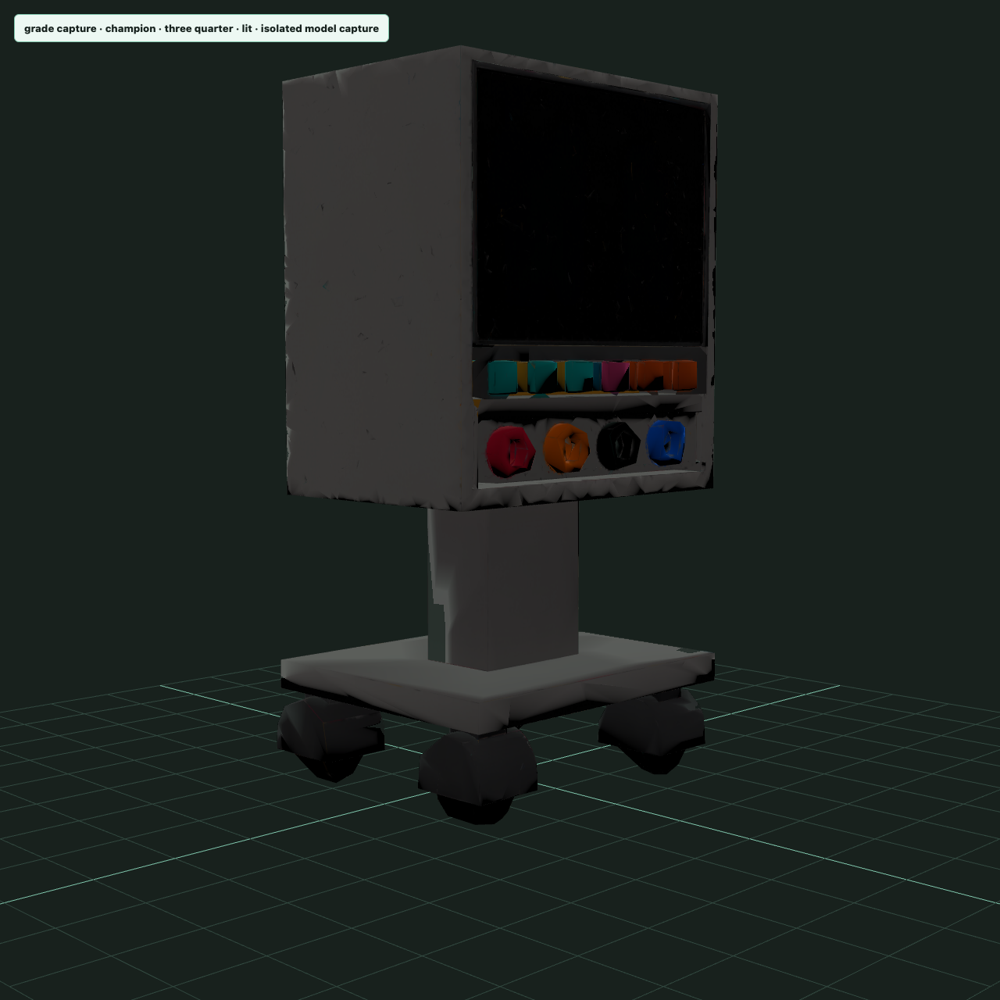

Exam surface
Author, assemble, run, and replay timed stations for learners, faculty, and admins— with traces, actor turns, and review packets in the loop.
Clinical skills simulation · WebXR-first
Timed clinical skills stations—from case blueprint to WebXR runtime— with faculty review, traces, and promotion gates that stay off until the evidence is real.
Inspired by Step 2 CS-style multi-station flow. Built as an encounter factory, not a pile of one-off scenes. Not an exam-equivalence or clinical-validity product.

Authors define stations. Learners run timed encounters. Faculty review traces and packets. Admins hold the gates.
Case fields (including clothing layers) drive generated actors and garments. WebXR sample scenes and Model Vetting captures are committed artifacts, not marketing fiction.
Promotion and readiness flags stay false until hardware and policy say otherwise. We document limits in public.
Platform
Author, assemble, run, and replay timed stations for learners, faculty, and admins— with traces, actor turns, and review packets in the loop.
Reviewed case definitions drive scenes, actors, dialogue posture, emotion timelines, asset needs, and persistence—so work scales past hand-built demos.
Rooms, humanoids, clothing, equipment, and provenance intended for reuse across encounters— with cage-match style comparison before anything is treated as “ready.”
Sidecars for humanoid generation, voice, IWSDK spikes, and providers stay isolated until evidence supports a promotion decision. Experiments don’t become product by accident.
Current state · August 2026
durableStore on scenario runtime + local authoring roundtrip CLI that emits replay-safe JSON (actor turns + timeline).pnpm factory:trellis:bake → a triangle ladder that lands the clock at 34.5k. Three assets, zero hand-modelling, all three visible below.upperarm01.L where the code asked for upper_armL, and a missing bone lookup is a silent skip, not an error. Now 14 of 14 on all three rails. Invisible in any screenshot; it is the difference between an actor that can be posed and one that cannot.mouth-open — sat unreachable because the runtime keyed on different names. Meanwhile the rail it could address carries constant-offset stubs: identical magnitude on every vertex, one direction, which slides a block of the face rather than opening a mouth. Also invisible until lip-sync drives it.root.rotation.y — the whole actor pivoting on the spot, feet included — while the eye bones every rail ships and skins were addressed by nothing. The evidence field that made this look handled was a name regex asserting an eye node exists.
Source of truth for status is the repo ledger (PROJECT_STATUS.md), not this page.
Public copy here is a snapshot for humans—updated when the product story actually moves.
Evidence you can look at
This section used to carry two WebXR captions labelled “phenotype-driven gown”. The captures underneath them showed a bare torso with a red patch, a deformed shoulder, and a status bar reading WebXR unavailable. The caption asserted a capability the picture disproved, so the pictures were removed on 2026-08-10 rather than recaptioned.
Clothing on this project is real but partial: garments are fitted from a library and driven by the case definition’s layers, and you can see them working on the actors in the station above.
Correction, 2026-08-10 evening. This section previously said one actor “renders translucent”. That was our diagnosis and measurement disproved it. Nothing on that figure is transparent; the garment covers every face of the region it claims — across four body/slot pairs, hidden-plus-behind-cloth accounts for all of them and zero faces have no garment nearby. The skin a viewer notices sits outside the claimed region, which makes it a question about how far the garment should reach, not a rendering fault.
We are leaving the section without a picture until that question is measured, because we were wrong about the mechanism four times on this one figure — a bare midriff (the garments overlap by 3 cm), a short sleeve (it is a full-body shell), translucent overlays (they are switched off), and a runtime ignoring its own hide mask (it honours it, with zero pixel difference). Each pixel observation was real and each explanation was wrong until it was measured. That is the reason for the caution here, stated plainly rather than implied.
Inspection packet: ed-real-garment-webxr-inspection.json. Deeper factory reports live under docs/openclinxr and Model Vetting cagematch outputs in the repo.
Evidence you can look at
On 2026-08-11 a rig upgrade landed on the library bodies — MPFB's 64-bone
mixamo_unity skeleton and its shipped CC0 weight map, replacing a hand-rolled
bounding-box armature whose hands carried 0.00% of the skin weight with
20,216 vertices collapsed onto a single upper-arm bone. Three machine contracts passed.
Then the capture was graded by eye, and the figure had no trousers.
The revert took one commit. What it exposed took the rest of the day: the trousers were
never rebuildable. Scrub_Shirt.mhclo and cortu_cargo_pants.mhclo
were on no disk in the repository — the staging directory is empty and
gitignored, and the provider cache held three upper garments and no lower-body source at
all. The 2,530 triangles in the tracked asset came from a bake whose input no longer
existed. Meanwhile the pipeline's own “find-or-stop” guard, asked for a lower garment and
finding none, logged a warning and baked the body anyway.
Both halves are fixed and in the repository: the guard now throws instead
of warning, and the sources are acquired, tracked, and recorded in the licence ledger at
acquisition time — makehuman-pants01 (CC0, Cortu Johnstone)
and Scrub_Shirt (CC-BY, WojackOWL). A re-bake now finds its
inputs with no network, or refuses loudly.
What this picture is not. It is not a claim that the figure looks good. The same capture carries three defects we have measured and not fixed: a sawtooth band of bare skin where the shirt hem meets the trousers; hands painted the garment colour rather than clothed — the shirt mesh spans Y 0.913–1.505 m on a 1.760 m body while the hands sit near 0.79 m, below its lowest vertex; and a shirt with no volume of its own, breast and navel anatomy reading straight through it.
A correction we made to ourselves. Grading the lit pass alone, we recorded the hands as “mittens with no separated fingers” and were about to file missing hand geometry. The structure pass shows fingers and thumbs present and well formed. Lit resolves silhouette, structure resolves topology, and the lit pass flatters. The wrong finding was caught because both passes are captured, not because anyone was careful.
Captures produced by model-vetting-glb-grade-capture, whose NodeIO-versus-scene-graph
self-check agreed to 1.2 × 10⁻⁵ relative error. That agreement proves the renderer drew
the file and nothing about whether the file is right — which is why a human graded the pixels,
and why the missing trousers were noticed at all.
Evidence you can look at
The two library bodies were bound to a hand-rolled bounding-box armature with Blender's
automatic weights. Measured, that put 0.00% of the skin weight on
hand.L/R and collapsed 20,216 vertices onto a single upper-arm
bone — an arm that moved as one rigid piece from shoulder to fingertip. The fingers
were in the mesh. Nothing could move them.
They now ride MPFB's 64-bone mixamo_unity rig with its shipped
CC0 weight map — mixamorig:LeftHand alone carries 592 vertex
entries, with full finger chains. Both files shipped with MPFB and neither was being used.
Why supine, and why that is the better evidence. A standing rest pose looks identical before and after a skeleton change — it would prove nothing. These are recumbent renders from the isolated posture harness, and the folded arms and separated fingers are shapes the previous rig could not produce at all.
What these are not. Isolated lab renders, not in-station frames: no room, no other actors, no clinical context. Framing is computed from the subject's bounding box by the harness, not authored — which is the point, because the authored per-mode cameras in the full scene are a separate and still-open defect. Two attempts at hand-tuning those camera positions today were measured and reverted, one of them producing a 7.4 KB blank frame.
Defects still visible and unfixed: the sawtooth seam where the top meets the trousers, and low-polygon faceting across the limbs. Neither is claimed as solved.
Dark software factory · shaping up
The factory goal is lights-out generation: case or prop intent becomes a learner-visible asset without a hand-model pass. Narrow generative input (Grok Imagine multi-view packs) feeds TRELLIS Metal reconstruction, then a measured meshopt ladder — not artist hand-tuning. One ECG cart run, measured 2026-08-11: 973,639 → 34,443 triangles (−96.5%). Meta’s Quest 3 class scene guidance is roughly 1.3–1.8M triangles for a whole scene (native); our default prop stop is ≤80k preferred, with ≤40k only when many props share a station. WebXR is more often fill-rate and draw-call bound than “one cart too dense.” Not worn-headset readiness. Not clinical realism. Proof the pipeline is real and iterable — without hyperoptimizing the number past readability.
Low-poly game-ready medical ECG monitor cart prop for WebXR / Quest. Hard-surface stylized, NOT photoreal. Clean boxy forms only. Wheeled base · upright column · large matte black screen. 6–8 square button pads · ≤6 circular jacks. NO free cables. NO logos, labels, text. Matte grey plastic. Studio grey bg. Maximize large flat planes for 3D reconstruction.
Hard-surface pack prompt — not a photoreal product shot. Photoreal inputs defeat post-opt (measured ~186k floor); hard-surface packs unlock preferred / share bands without fighting high-frequency detail.


factory:trellis:bake
MADR 0050: do not reject the generator on raw tris. Judge after optimization. Raw megameshes are never delivery assets.

Technique: direct high-error targets from raw (chain ratios plateau ~59k on hard-surface —
also under preferred). Delivery: optional factory:trellis:pack (gltfpack).
Policy: stop at the first graded rung under preferred; do not chase 25k for the number.
Still a harness prop — not a worn-headset claim.
Budget policy (factory skill): prop preferred ≤80k (default stop) ·
share ≤40k only when multi-prop station pressure · acceptable ≤120k · skeleton hard ≤180k
(partial station, not full multi-actor) · Quest 3 device-class ceiling ~1.3–1.8M scene tris
(Meta native guidance). Draw calls, materials, and fill-rate usually matter more than shaving
another 15k off one cart. Optimize order: batching → materials → KTX2 → multiview → tris.
Pipeline CLIs: pnpm factory:trellis:bake →
pnpm factory:trellis:optimize →
pnpm factory:trellis:pack.
Skill: .agents/skills/trellis-vr-equipment-optimize/.
Evidence: .openclinxr/evidence/trellis-bake-vr-hard/,
trellis-vr-optimize-iterations/ecg-cart-vr-hard/.
claimScope: factory automation path for equipment props.
notEvidenceFor: Quest readiness, clinical accuracy, exam equivalence.
Evidence you can look at
The input half, added 2026-08-10. Before anything is reconstructed, the factory renders reference views of the object from its own parametric builder. On 2026-08-10 that step went from 3 subjects to 38: 35 clinical objects, five views each, 175 renders in a single 61-second pass with one browser and one dev server. Every view is measured for isolation — no room geometry, no HUD, no ground plane — and every one passed.
Each of these began as one reference image and was reconstructed to a textured mesh by TRELLIS running on Apple Silicon Metal — no hand-modelling, no per-asset artist pass. Rendered here in isolation from the shipped GLB, lit and wireframe, at the triangle budget each survives.
The wall clock is now consumed by the runtime: a station that declares it renders the generated mesh, measured at 34,885 triangles in a live scene, up from a 26-triangle placeholder. The monitor (~106k) and denser ECG cart variants remain isolated harness renders pending grade + multi-prop station share — 106k is still under prop acceptable (≤120k) and far under Quest 3 scene class (~1.3–1.8M). None of this is a Quest performance claim, and none of it is evidence of clinical realism.
Roadmap · from the queue only
These items come from the current project ledger. Dates are not SLAs. Nothing here promises production deployment, headset certification, or clinical validation.
Queue source: PROJECT_STATUS.md (Next dequeue + Active Work).
If the ledger changes, this section should change with it—or stay quiet.
Deployment posture
Development and validation run locally with deterministic providers and preconfigured assets where possible. Connected adapters exist behind explicit gates. Azure is a long-term home for API, orchestration, and admin surfaces— not a claim that production is live today.
Build model
The repo runs an OpenClaw-style operating model: role charters, path scopes, leases, drift guards, and slice records. That keeps long autonomous work from inventing features outside the blueprint-factory mission. It is how we build OpenClinXR—not a separate product you install.
Evidence Docs
Marketing pages should not replace the ledger. The following links are committed factory and evidence posts for operators and auditors.